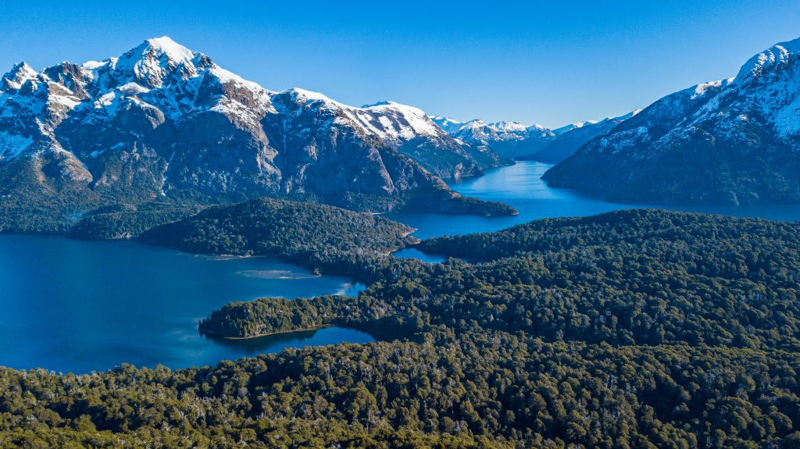

<div class="col">
    <div class="card h-100">
        
        <div class="card-body">
            <h5 class="card-title">San Carlos de Bariloche</h5>
            <p class="card-text">San Carlos de Bariloche (comúnmente llamada Bariloche) es una ciudad en la región de la Patagonia argentina. Limita con Nahuel Huapi, un gran lago glacial rodeado de montañas de los Andes.</p>
            <a href="https://barilocheturismo.gob.ar/es/home" class="btn btn-primary">Ver sitio</a>
        </div>
    </div>
</div>